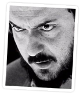

When I discovered CMSes, I had to fight my way through several systems (who shall remain unnamed) before settling on Xoops. Xoops won my heart because it was easy to use and had an amazing support community while still offering all the features I needed. And like a good wine, it just keeps getting better.
However, I nearly overlooked Xoops because its default theme seemed convoluted, industrial, and dull to me. I didn't know what I should be looking for back then, and the default theme didn't give me the window I needed into the system's user-friendly, intuitive design.
This theme — code-named Kubrick (after the late Stanley Kubrick) — was ported as an attempt at providing a more stylish platform on which you can build your site. I have done my utmost to make this theme cross-browser compatible and easy to modify while keeping it powerful and versatile.
All you need is a working installation of:
Assuming the above requirement has been met, it's time to 'install' the thing.
Enable — Log in to the administration section of your Xoops installation. Click System Admin > Preferences > General Settings, and change the Default theme to "kubrickFlexible". Now click "Go!" to save your changes.
The default install will give you a decent looking, but fairly impersonal site. Many of you will want to tweak it to make it "more you." The whole theme has been laid out in a way that will hopefully make that very easy for you to do. Much of the markup is commented, and everything was structured to make modifications as straightforward as possible.
One easy step is changing the colors. This can be done by doing a search & replace on the default blue values. The darker blue is #48b, and the lighter is #6ae. Hyperlinks are colored #06c. Just replace those values with your own color values (i.e. white, #fff, or #ffffff).
There are two favors I ask of you if you choose to use this theme:
So go ahead, put a smile on my face. =)
I have done all I can to make the design as smart as possible, though Xoop's modular makeup makes this tricky to perfect. (Not all modules contain standards compliant XHTML or CSS.) The XHTML and CSS in this theme however IS standards compliant.
KubrickFlexible will scale as far down as 800x600 and expand up to 1600x1200. It incorporates basic search engine optimization techniques. And it has been tested in Internet Explorer 6.0 and FireFox 1.0.
If you find rendering errors, be it text that is too small to be readable, or divs that are off by a pixel or more, please let me know by posting in my forum.
"Good afternoon, gentlemen. I am a HAL 9000 computer. I became operational at the H.A.L. plant in Urbana, Illinois on the 12th of January 1992. My instructor was Mr. Langley, and he taught me to sing a song. If you'd like to hear it I can sing it for you."
This theme was originally created by Michael Heilemann for the Wordpress blogging platform. He chose the codename Kubrick because he found Stanley Kubrick to be one of the most visionary artists of modern time. Much like his films, this theme is cool and somewhat austere, requiring effort for it to become the personal experience that it has the potential to be.
Happy Xoopsing!